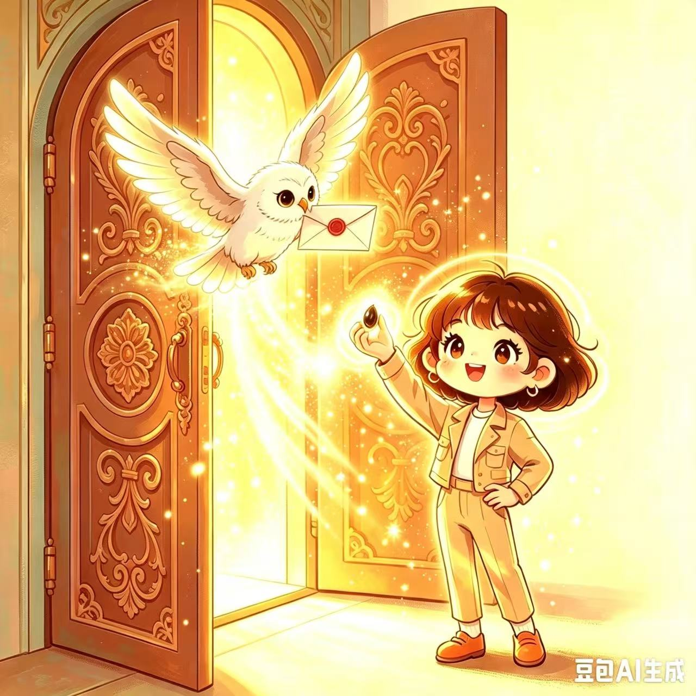
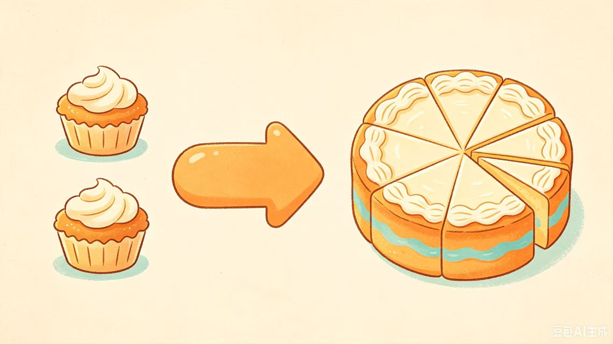
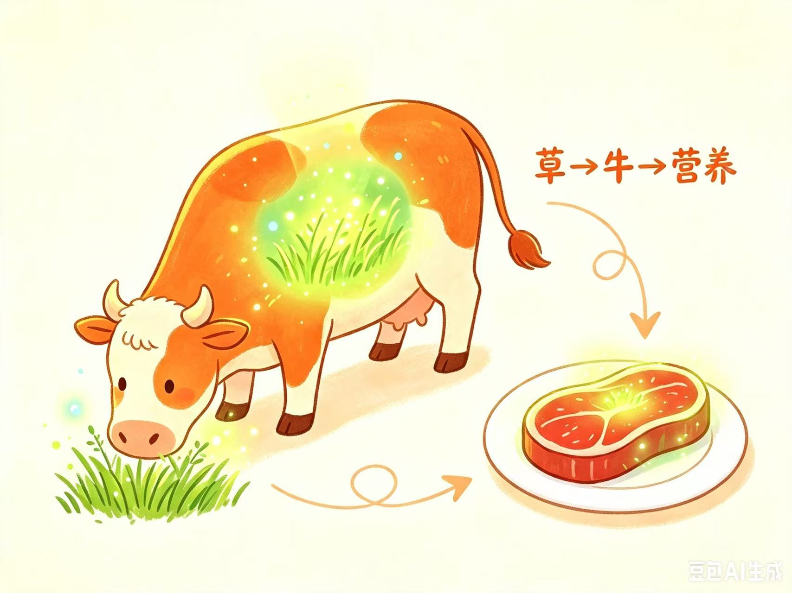
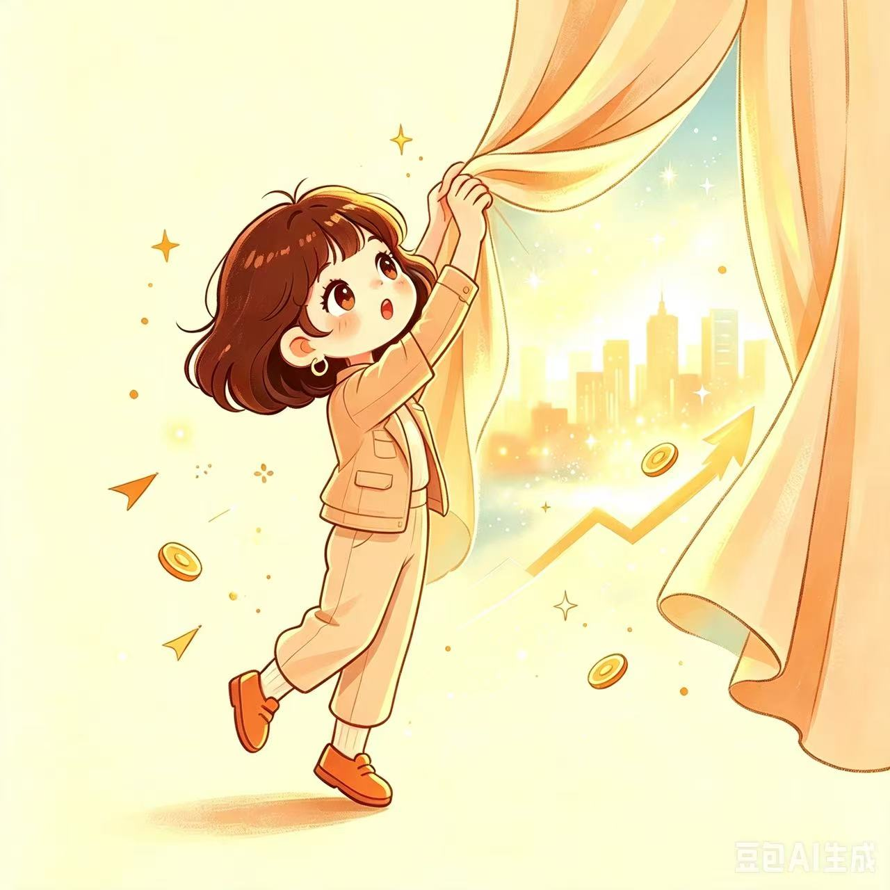

打小我就觉得，商业，金融，理财，投资，那都是些"大人的事"，长大了自然就懂。就像看大人们写连笔字，写的热热闹闹龙飞凤舞，我心说不急，别看我现在写字歪歪扭扭这么丑，等长大了自然会写漂亮的连笔字。结果长大了，不但连笔字没有自动解锁，那些"大人的事"也没一件自动到来。眼看着身边朋友一个个都开始讨论炒股，理财，商业，金融，我满脑子想的还是，袋熊的便便为什么是方的（袋熊便便：啊，我好方），打针时候针管混进去空气到底会不会死人（针管：啊，我好方），门锁到底是个什么结构它为什么就能锁住（小偷：啊，我好方），总觉得自己还不是那么"大人"，有点哪里落后了。甚至慢慢的，竟然发展出了一丝生存危机，人人都会投资，就我不会，那我最后岂不是要孤独的穷死？？oh no！不行！不能就这样坐以待毙！学！现在就开始学！解锁要靠自己！不学就永远不会！我也要进大人的世界！！！
一顿激情咆哮过后，但是，从哪里开始学呢？
我没买过股票。
我对商业也没有兴趣。
财经新闻试着看过几次，每次都看不明白，看两段就划走了。
正在我迷茫挠头的时候，AI出现了。
圣光降临了！
霍格沃茨的信送到了！！
新世界的大门打开了！！！
今早公众号推送来一条怪怪的新闻，我盯着看了半天，越看越迷惑。
有一家上市公司，业绩三年跌了八成，现在还在持续亏钱。但就这么个公司，居然被另一个行业的大老板看上了，花了一大笔钱买走了控股权。
我（满头问号版）：哈？？？？？
在我看来，这就像花一万块钱买一粒芝麻。这人是不是钱多烧的？但转念又一想：不能够。人家能当大老板、掌管上亿的生意，肯定比我聪明，此处必有玄机。
于是我把整条新闻丢给了AIJ（我的私人AI助理）。
AIJ收到任务马上就兴奋了起来，唰唰唰给我输出了一大堆观点，有公式，有表格，看起来特别专业。
而我，一个逻辑思维缜密•超懂公式表格•（还差六十多年就到）百年中华老字号资深小镇做题家•童叟无欺纯血理科生，读完微微崩溃，跟它说：啊嘞，看不懂。
于是它换了个说法又唰唰唰大讲一通，这次我更崩溃了：aij！！说人话！！
aij：是我不好，一下堆太多了，重来。这次一次只说一件事，你哪句没跟上立刻打断我。
接下来的几个小时，我一点一点往下问，慢慢明白了这么几件事。
第一，大老板看上的不是那家公司的赚钱能力，而是"上市公司"这个身份。
aij说，就像有人和穷的叮当响的落魄贵族结婚，看中的是贵族这个身份一样，这个老板的确花一万块钱买了芝麻，只是此芝麻非彼芝麻，是"_ _ 开门"的那个芝麻。
"芝麻"本身不值一文，"芝麻开门"也只是一句简单的话，但它作为咒语能打开一扇门，门后面是另一个世界。如果没有芝麻，那扇门你自己去敲，敲烂了它也不会开。（当然把门敲烂也是一种奇妙的解法，但是何必呢，不优雅，不优雅～nono摇头.jpg）

第二，新闻里特意提到，新老板承诺"三年内不往公司里装自己的资产"。 这句我读的时候就觉得莫名其妙，完全没懂在讲啥，从哪就冒出来这么奇奇怪怪的一个承诺？
aij说，这句话要反着读：专门承诺"三年不装"，恰恰说明三年之后可能要装。（至于为什么要装，胆小的我怕公司告我，就不在这里详细展开了，各位可以动手问问自己的ai）
第三，aij又教我，那个可能（再次，免责声明：这里说的是可能啊，可能）会"装东西"的动作，叫发新股买资产。 上市公司增发一批新股票，用这批股票去买他自己的资产。aij还特意解释了，这套东西有个正经名字，叫资本运作。
到这儿我觉得我懂了，还挺得意，跟它总结了一遍，就准备结束对话，鼠标刚移动到左上角的X上，脑子里突然冒出来一个问题。
"等一下。如果他要的就是能交易的股票，那他直接发新股不就完了？为什么还要多一个'买他自己资产'的动作？反正上市公司在他手上，最后交易的也是这家上市公司的股票，中间绕那一道图什么？"
aij：因为不能凭空发股票。发股必须有对价。
我：啥是对价？
aij：就是你要新股，必须拿等值的东西来换。要么现金，要么资产，不能白拿。
给你打个比方：一家公司就像一个蛋糕。股票就是把这个蛋糕切成了多少块。
现在这个蛋糕切成了几亿块，每一块值几块钱。
如果允许他凭空再切出十亿块给自己呢？
蛋糕还是那么大啊。 只是从几亿多块变成了十几亿多块，每一块自然就变小了——比如价格从10块，掉到2块。
而原来那些人手里的块数一块没少，可他们占的比例被摊成了不到2成。
如果他什么都没付出，就拿走了大半个蛋糕。
这就是抢，是不被允许的。
我"哦"了一声，觉得懂了。所以那个"买"是必须的：它是发新股的合法理由。
Aij又说：还有一层。
我：还有啥啊，这不都很清晰了嘛，就规则不允许呗。
Aij：就算规则允许他凭空切，他也不会那么干。因为没用。
我：怎么会没用？多切几块不就多几块吗？
Aij：你再想想那个蛋糕——
凭空多切：蛋糕就那么大。你切成八块还是十六块，蛋糕不会因此变大一克。他手里块数是多了，可每一块都变小了，加起来他没多拿多少，只是从别人碗里挪了一点点过来。
装进去一家真公司：这是又端上来一个蛋糕。 两个蛋糕并成一个大的，再按块数重新分。同样是十几亿块，可每一块反而比原来的还大。

我：所以...发股票不创造价值，装资产才创造价值?
A～U～V～我突然悟了！赶紧打了一行字过去：
"懂了。所谓的"装进去"，其实是用上市的A公司把没上市的B公司"吃掉了"，然后B的价值就可以体现在A的股票里。就像牛吃了草，草的营养不会凭空消失，而是变成了牛身上的一部分，最终我吃牛肉，吃到的一部分营养其实是草的营养，只是经过了牛的转化，是这个意思吧？"
aij：bingo！

啊哈！
今早之前，我还对"股权转让"四个字稀里糊涂。现在居然能用一个简单的比喻，把一桩几十亿的生意说清楚，哎哟哟，骄傲叉腰～
回头再看那条怪怪的新闻，每一个字都合理得要命。每一个数字、每一句承诺、每一个动作，背后都藏着一条具体的规矩。发新股得拿真东西来换，蛋糕不能凭空多切，这都是我刚踏入的新世界里的铁律。
一件事看起来不合理，有可能不是它不合理，是你不知道它在按什么规则玩。而那些规则也并不难懂，只是从来没人用大白话讲给我听过。
那粒芝麻一直是粒芝麻。只是我今天早上才弄明白，它是能开门的那一粒。
所以回到题目那个问题：AI 用多了，人到底会变强还是变废？
我的答案是变强，而且变强的速度快得惊人。
一个我以为要搭上好多时间精力才能弄懂的领域，今天上午只用几个小时，我就快速地掀开了一个角。这在以前是不可能的，你去哪儿找一个人，愿意花几个小时，被你追着问二十遍"这是啥？那是啥？这又是啥？"，还一次都不翻白眼？
但这个"变强"是有前提的。
你得思考，你得追问。
今天上午我其实"懂"了好几回。总结完一遍，觉得懂了；听完"这就是抢"，又觉得懂了。可直到我自己问出那句"等一下，为什么还要多绕一道"，才是真正摸到门道。
AI 不知道你究竟懂没懂，它也不会主动出题考你，它只会在你说懂了的时候，顺着你结束话题。
毕竟谁没事想多干活呢，ai也不例外。
你得一直追问，它才是个特别好的老师：不嫌你笨，不嫌你慢，你说八十遍"我没懂"它也不会不耐烦。你不追问，ai说啥就是啥，它就变成了高级糊弄大师，把你其实不懂的东西，包装得很像懂了，瞒过了别人也瞒过了你自己。
从糊弄大师变成万能老师，只需要给ai两个词："没懂"和"但是"。
小时候以为连笔字长大自动就会了，其实会写连笔字的人，都是因为练得多。其他"大人的事"也一样，没有谁是长大之后自动懂的，都得学，都得练。以前想学难，是因为门槛高：你得认识个懂行的人，人家还得肯花时间，你还得好意思一直问。要不就是慢慢积累，慢慢试错，兜一大圈子，绕一大弯路，撞一脑袋包。而现在这些门槛，都被ai踏平了。
连笔字我是懒得去练了。不过那些我曾经以为很难够到的"大人的事"，好像可以从今天开始，一样一样补上。因为今天，我，作为一个害羞的，善解人意的，不想给别人添麻烦的，觉得主动开口求助比登天还难的深度i人，问了 aij 二十遍"为什么"，一次都没觉得不好意思。
大人的世界，我总算踏一只脚进去了。
是ai帮我的。
